import numpy as np
import pandas as pd
import matplotlib.pyplot as plt07wk-2: numpy (2)
3. numpy의 랜덤모듈
A. np.random.rand()
- 0~1 사이의 난수를 생성
np.random.rand(10)array([0.58941047, 0.69926949, 0.33916133, 0.18862168, 0.10532343,
0.06246933, 0.01232861, 0.98715356, 0.18684946, 0.13983473])- 0~2 사이의 난수를 생성
np.random.rand(10)*2array([1.80736582, 1.93348343, 1.68098319, 0.43413714, 0.71755663,
0.7102633 , 1.07810931, 0.60570584, 1.66424551, 0.77034062])- 1~2사이의 난수를 생성
np.random.rand(10) + 1array([1.57528954, 1.50957007, 1.91299354, 1.97522497, 1.06414156,
1.55571812, 1.88961334, 1.25059642, 1.48543607, 1.15425812])- 1~3사이의 난수를 생성
np.random.rand(10)*2+1 #1~3array([2.52498614, 2.568343 , 1.00781278, 1.93745719, 2.28135839,
2.68434348, 2.60834186, 1.95569743, 2.56052396, 1.27544114])B. np.random.randn()
- N(0,1)에서 난수생성
np.random.randn(10) # 표준정규분포에서 10개의 샘플 추출array([-0.46632939, -0.44496717, 1.96656133, -1.33787939, -0.89941124,
-0.14937251, 1.74400521, -0.08109252, 1.9828275 , 0.6927916 ])- N(1,1)에서 난수생성
np.random.randn(10) + 1 array([ 1.12818975, -0.24900447, 3.39072323, 2.17716347, 0.56283054,
-0.75113078, 0.88154768, 0.63493705, 1.13202236, 1.16649509])- N(0,4)에서 난수생성
np.random.randn(10)*2array([-4.47136605, -0.79364009, 1.12387729, 2.57749151, -0.60706663,
-0.0669373 , 2.7967139 , -0.01976654, -0.7196062 , -1.49279584])- N(3,4)에서 난수생성
np.random.randn(10)*2 + 3array([ 1.06708238, -0.2125781 , 3.62986709, 3.13150903, 5.36899207,
1.42085408, 0.40921661, 4.20606618, 0.8264032 , -0.16558588])C. np.random.choice()
- [0,1,2,3,4] 에서 임의의 원소를 하나 뽑는 방법
np.random.choice([0,1,2,3,4])1- [0,1,2,3,4] 에서 30개의 원소를 뽑는 방법
np.random.choice([0,1,2,3,4],size=30)array([1, 0, 3, 3, 0, 3, 2, 4, 4, 4, 3, 0, 4, 4, 1, 4, 4, 0, 1, 1, 2, 2,
1, 1, 3, 4, 1, 3, 1, 1])np.random.choice(range(5),size=30)array([2, 3, 1, 1, 1, 3, 1, 4, 3, 4, 3, 4, 2, 2, 3, 4, 1, 1, 4, 1, 1, 1,
1, 4, 1, 3, 0, 1, 2, 0])- [‘사과’,‘딸기’,‘딸기’,‘배’] 에서 10000개의 원소를 뽑는 방법
lst = list(np.random.choice(['사과','딸기','딸기','배'],size=10000))
{s:lst.count(s) for s in set(lst)}{'배': 2547, '딸기': 4971, '사과': 2482}- [‘사과’,‘딸기’,‘딸기’,‘배’] 에서 3개의 원소를 중복을 허용하지 않고 (= 뽑은걸 다시 넣지 않고) 뽑는 방법
np.random.choice(['사과','딸기','딸기','배'],size=3,replace=False) array(['배', '딸기', '딸기'], dtype='<U2')np.random.choice(['사과','딸기','딸기','배'],size=4,replace=False) array(['사과', '딸기', '배', '딸기'], dtype='<U2')np.random.choice(['사과','딸기','딸기','배'],size=5,replace=False) ValueError: Cannot take a larger sample than population when 'replace=False'D. np.random.randint()
- [0,1,2,3] 에서 하나의 정수를 뽑는 방법
#[0,1,2,3] 은 [0,4) 구간에 존재하는 정수로 해석가능함.
np.random.randint(low=0,high=4) # = np.random.choice(range(4))1- [0,1,2,3] 에서 30개의 정수를 뽑는 방법
np.random.randint(low=0,high=4,size=30)array([0, 0, 1, 2, 3, 0, 0, 2, 2, 1, 0, 2, 3, 1, 2, 3, 2, 3, 3, 0, 0, 3,
2, 2, 2, 3, 0, 2, 1, 0])E. 통계분포
- 균등분포에서 난수생성
np.random.uniform(low=0,high=1,size=10) # np.random.rand(10) array([0.73569341, 0.36599013, 0.26090338, 0.18444605, 0.09231955,
0.04369649, 0.99015962, 0.89257958, 0.84660922, 0.23957504])np.random.uniform(low=0,high=2,size=10) # np.random.rand(10)*2array([1.44213267, 0.21051849, 0.42641199, 0.03709695, 1.39200949,
1.38871657, 1.81552955, 1.29025523, 1.69617607, 0.99934997])np.random.uniform(low=2,high=4,size=10) # np.random.rand(10)*2+2array([3.42441122, 3.39723246, 3.72563654, 3.75325107, 3.06948699,
3.40992519, 2.9354989 , 3.89275846, 3.57385422, 2.20879669])- 정규분포에서 난수생성
np.random.normal(loc=0,scale=1,size=10) # np.random.randn(10)array([-0.32121419, 0.69523318, -1.13166958, 1.16222367, -1.11960615,
-0.21732796, 0.77870038, -1.8126043 , 0.9891007 , -0.03148832])np.random.normal(loc=0,scale=2,size=10) # np.random.randn(10)*2 array([-0.68523673, 0.10774027, 0.1479219 , 1.69006631, -5.02705871,
1.34767819, 0.86170609, 1.32326532, -0.79360158, -1.33153793])np.random.normal(loc=5,scale=2,size=10) # np.random.randn(10)*2 + 5 array([3.3017347 , 6.56081368, 6.31366425, 6.89570678, 3.23813184,
5.7967364 , 5.22375952, 4.33677979, 3.32581582, 4.94785401])- 이항분포
lst = np.random.binomial(n=2, p=0.5, size=10000).tolist()
{s:lst.count(s) for s in set(lst)}{0: 2475, 1: 5032, 2: 2493}- 포아송분포
np.random.poisson(lam=1.0,size=100)array([1, 1, 0, 4, 0, 2, 3, 5, 0, 1, 0, 1, 2, 0, 1, 2, 0, 0, 0, 0, 2, 2,
0, 0, 1, 0, 1, 3, 1, 1, 1, 1, 1, 0, 1, 0, 4, 1, 2, 0, 0, 2, 1, 2,
0, 0, 2, 0, 2, 1, 0, 0, 0, 2, 1, 0, 1, 1, 0, 1, 2, 3, 0, 0, 2, 1,
1, 2, 0, 1, 2, 0, 0, 1, 1, 1, 4, 1, 0, 2, 0, 1, 1, 0, 1, 4, 1, 3,
0, 1, 0, 0, 2, 1, 0, 2, 0, 0, 1, 0])4. numpy – 기타 유용한 기본기능들
A. np.where, np.argwhere
- 1차원
a = np.array([0,0,0,1,0])
aarray([0, 0, 0, 1, 0])np.where(a==1), np.where(a==0)((array([3]),), (array([0, 1, 2, 4]),))np.argwhere(a==1), np.argwhere(a==0)(array([[3]]),
array([[0],
[1],
[2],
[4]]))- 2차원
np.random.seed(43052)
a = np.random.randn(12).reshape(3,4)
aarray([[ 0.38342049, 1.0841745 , 1.14277825, 0.30789368],
[ 0.23778744, 0.35595116, -1.66307542, -1.38277318],
[-1.92684484, -1.4862163 , 0.00692519, -0.03488725]])np.where(a<0),np.argwhere(a<0)((array([1, 1, 2, 2, 2]), array([2, 3, 0, 1, 3])),
array([[1, 2],
[1, 3],
[2, 0],
[2, 1],
[2, 3]]))a[1,2],a[1,3],a[2,0],a[2,1],a[2,3] (-1.6630754187023522,
-1.382773180699087,
-1.9268448358915802,
-1.4862162961554322,
-0.03488724631833874)- 인덱스를 읽기에는 np.argwhere 이 편한듯
의문: np.where()은 필요없는가? –> 사실 np.where()이 np.argwhere()보다 쓸만함
np.random.seed(43052)
a = np.random.randn(12).reshape(3,4)
aarray([[ 0.38342049, 1.0841745 , 1.14277825, 0.30789368],
[ 0.23778744, 0.35595116, -1.66307542, -1.38277318],
[-1.92684484, -1.4862163 , 0.00692519, -0.03488725]])a의 원소중 0보다 작은것을 출력하고 싶다면?
a[np.where(a<0)] # 출력가능array([-1.66307542, -1.38277318, -1.92684484, -1.4862163 , -0.03488725])a[np.argwhere(a<0)] # 출력불가능IndexError: index 3 is out of bounds for axis 0 with size 3a의 원소중 0보다 작은것을 0으로 바꾸고 싶다면?
np.random.seed(43052)
a = np.random.randn(12).reshape(3,4)
aarray([[ 0.38342049, 1.0841745 , 1.14277825, 0.30789368],
[ 0.23778744, 0.35595116, -1.66307542, -1.38277318],
[-1.92684484, -1.4862163 , 0.00692519, -0.03488725]])np.where(a<0,0,a) # a<0을 체크 -> 조건에 맞으면 0 -> 조건에 안맞으면 aarray([[0.38342049, 1.0841745 , 1.14277825, 0.30789368],
[0.23778744, 0.35595116, 0. , 0. ],
[0. , 0. , 0.00692519, 0. ]])np.where(a<0,0,100) # a<0을 체크 -> 조건에 맞으면 0 -> 조건에 안맞으면 100array([[100, 100, 100, 100],
[100, 100, 0, 0],
[ 0, 0, 100, 0]])- 요약: np.argwhere()이 인덱스의 좌표를 읽을때 가독성이 있으나 조건에 맞는 원소를 출력하거나 처리할때는 np.where()이 유용함.
B. 인덱싱 (실수하지마세요)
- 아래와 같은 2d-array를 고려하자.
a = np.arange(12).reshape(3,4)
aarray([[ 0, 1, 2, 3],
[ 4, 5, 6, 7],
[ 8, 9, 10, 11]])- 첫번째 행을 뽑을때, 축의 숫자를 줄이고 싶을때도 있고 축의 숫자를 유지하고 싶을때도 있음.
a[0,:] # 첫번째 행을 뽑는코드1 = 축이 하나 줄어든다array([0, 1, 2, 3])a[[0],:] # 첫번째 행을 뽑는코드2 = 축의 숫자가 유지된다. array([[0, 1, 2, 3]])- 세번째 열을 뽑을때, 축의 숫자를 줄이고 싶을때도 있고 축의 숫자를 유지하고 싶을때도 있음.
a[:,2] # 세번째 열을 뽑는코드1 = 축이 하나 줄어든다array([ 2, 6, 10])a[:,[2]] # 세번째 열을 뽑는코드2 = 축의 숫자가 유지된다. array([[ 2],
[ 6],
[10]])C. np.ix_
a = np.arange(12).reshape(3,4)
aarray([[ 0, 1, 2, 3],
[ 4, 5, 6, 7],
[ 8, 9, 10, 11]])a[0:3,0:3]array([[ 0, 1, 2],
[ 4, 5, 6],
[ 8, 9, 10]])a[[0,1,2],0:3]array([[ 0, 1, 2],
[ 4, 5, 6],
[ 8, 9, 10]])a[0:3,[0,1,2]]array([[ 0, 1, 2],
[ 4, 5, 6],
[ 8, 9, 10]])a[[0,1,2],[0,1,2]] # 이건 왜이래?array([ 0, 5, 10])- 사실 np.where 에서 이러한 결과를 보긴했음
a[np.where(a % 5 ==0)]array([ 0, 5, 10])a[[0,1,2],[0,1,2]] # 이 코드는 a[0:3,0:3] 와 다르다!array([ 0, 5, 10])- 헷갈리게 만든건 맞음. 결론은 실수하면 안됨.
- 그런데 가끔은 a[[0,1,2],[0,1,2]] 이 a[0:3,0:3]를 의미하도록 하고 싶음.
a[[0,1,2],[0,1,2]] # 이건 이상하게 동작하는데..array([ 0, 5, 10])a[np.ix_([0,1,2],[0,1,2])] # 이건 상식적으로 동작함..array([[ 0, 1, 2],
[ 4, 5, 6],
[ 8, 9, 10]])D. 메소드의 도움말을 자세히 확인하기
- 넘파이에서 a.sum()에 대한 도움말은 np.sum을 확인하면 더 자세하게 읽을 수 있음.
E. hstack, vstack
- hstack, vstack을 쓰는 사람도 있다.
a = np.arange(6)
b = -a np.vstack([a,b]) # 출력이 2차원
# np.stack([a,b],axis=0) -- 이거랑 같은코드array([[ 0, 1, 2, 3, 4, 5],
[ 0, -1, -2, -3, -4, -5]])np.hstack([a,b]) # 출력이 1차원
# np.concatenate([a,b],axis=0) -- 이거랑 같은 코드array([ 0, 1, 2, 3, 4, 5, 0, -1, -2, -3, -4, -5])F. append
- 이걸 쓰는 사람도 있음
- 활용방법1: reshape(-1) + concat
a = np.arange(30).reshape(5,6)
b = -np.arange(8).reshape(2,2,2)a, b(array([[ 0, 1, 2, 3, 4, 5],
[ 6, 7, 8, 9, 10, 11],
[12, 13, 14, 15, 16, 17],
[18, 19, 20, 21, 22, 23],
[24, 25, 26, 27, 28, 29]]),
array([[[ 0, -1],
[-2, -3]],
[[-4, -5],
[-6, -7]]]))a.shape, b.shape((5, 6), (2, 2, 2))np.append(a,b)
# np.concatenate([a.reshape(-1), b.reshape(-1)]) -- 같은코드array([ 0, 1, 2, 3, 4, 5, 6, 7, 8, 9, 10, 11, 12, 13, 14, 15, 16,
17, 18, 19, 20, 21, 22, 23, 24, 25, 26, 27, 28, 29, 0, -1, -2, -3,
-4, -5, -6, -7])- 활용방법2: reshape(-1) + concat
a = np.arange(2*3*4).reshape(2,3,4)
b = -aa.shape, b.shape((2, 3, 4), (2, 3, 4))np.append(a,b,axis=0)
#np.concatenate([a,b],axis=0) -- 이거랑 같은코드array([[[ 0, 1, 2, 3],
[ 4, 5, 6, 7],
[ 8, 9, 10, 11]],
[[ 12, 13, 14, 15],
[ 16, 17, 18, 19],
[ 20, 21, 22, 23]],
[[ 0, -1, -2, -3],
[ -4, -5, -6, -7],
[ -8, -9, -10, -11]],
[[-12, -13, -14, -15],
[-16, -17, -18, -19],
[-20, -21, -22, -23]]])append와 concat은 약간의 차이가 있음 – append는 3개이상을 concat할 수 없음.
a = np.arange(2*3*4).reshape(2,3,4)
b = -a
c = 2*anp.concatenate([a,b,c],axis=0)array([[[ 0, 1, 2, 3],
[ 4, 5, 6, 7],
[ 8, 9, 10, 11]],
[[ 12, 13, 14, 15],
[ 16, 17, 18, 19],
[ 20, 21, 22, 23]],
[[ 0, -1, -2, -3],
[ -4, -5, -6, -7],
[ -8, -9, -10, -11]],
[[-12, -13, -14, -15],
[-16, -17, -18, -19],
[-20, -21, -22, -23]],
[[ 0, 2, 4, 6],
[ 8, 10, 12, 14],
[ 16, 18, 20, 22]],
[[ 24, 26, 28, 30],
[ 32, 34, 36, 38],
[ 40, 42, 44, 46]]])np.append(a,b,c,axis=0) # 3개는 에러..TypeError: append() got multiple values for argument 'axis'G. ravel, faltten
a = np.arange(2*3*4).reshape(2,3,4)
aarray([[[ 0, 1, 2, 3],
[ 4, 5, 6, 7],
[ 8, 9, 10, 11]],
[[12, 13, 14, 15],
[16, 17, 18, 19],
[20, 21, 22, 23]]])a.reshape(-1)array([ 0, 1, 2, 3, 4, 5, 6, 7, 8, 9, 10, 11, 12, 13, 14, 15, 16,
17, 18, 19, 20, 21, 22, 23])a.ravel()array([ 0, 1, 2, 3, 4, 5, 6, 7, 8, 9, 10, 11, 12, 13, 14, 15, 16,
17, 18, 19, 20, 21, 22, 23])a.flatten()array([ 0, 1, 2, 3, 4, 5, 6, 7, 8, 9, 10, 11, 12, 13, 14, 15, 16,
17, 18, 19, 20, 21, 22, 23])H. 통계관련 함수들
- 평균, 중앙값
a = np.random.randn(1000)*2 + 1
a.mean(), np.median(a)(0.9288682531744334, 0.9018282676019249)- 표준편차, 분산
a = np.random.randn(1000)*2 + 1
a.var(), a.std()(3.78268010795389, 1.944911336784762)# 자유도의 조절
a.var(ddof=1), a.std(ddof=1)(3.7864665745284185, 1.9458845224032228)- corr matrix, cov matrix
x = np.random.randn(10000)
y = np.random.randn(10000)*2
z = np.random.randn(10000)*0.5np.cov([x,y,z]).round(2)array([[ 1.02, 0.01, -0. ],
[ 0.01, 4.01, 0. ],
[-0. , 0. , 0.25]])np.corrcoef([x,y,z]).round(2)array([[ 1. , 0. , -0.01],
[ 0. , 1. , 0. ],
[-0.01, 0. , 1. ]])I. dtype
- np.array 에는 항상 dtype이 있다.
a = np.array([1,2,3])
a.dtypedtype('int64')a = np.array([1.0, 2.0, 3.0])
a.dtypedtype('float64')- 같은 int라고 해도 int16, int32, int64와 같이 타입이 다를 수 있다.
a = np.array([1,2,3], dtype=np.int64)
aarray([1, 2, 3])a = np.array([1,2,3], dtype=np.int32)
aarray([1, 2, 3], dtype=int32)a = np.array([1,2,3], dtype=np.int16)
aarray([1, 2, 3], dtype=int16)- 같은 float라고 해도 float16, float32, float64와 같이 타입이 다를 수 있다.
a = np.array([1,2,3], dtype=np.float64)
aarray([1., 2., 3.])a = np.array([1,2,3], dtype=np.float32)
aarray([1., 2., 3.], dtype=float32)a = np.array([1,2,3], dtype=np.float16)
aarray([1., 2., 3.], dtype=float16)- dtype은 아래와 같은 방법으로 변환할 수 있다.
a = np.array([1,2,3])
aarray([1, 2, 3])a.dtypedtype('int64')b = a.astype(np.float64)a, b(array([1, 2, 3]), array([1., 2., 3.]))- 문자열이 넘파이의 원소로 있는 경우
a = np.array(['a','b','c'])
aarray(['a', 'b', 'c'], dtype='<U1')a = np.array(['aa','b','c'])
aarray(['aa', 'b', 'c'], dtype='<U2')a = np.array(['aaaa','b','c'])
aarray(['aaaa', 'b', 'c'], dtype='<U4')- 문자열+숫자의혼합 -> 각 원소의 자료형이 문자열로 통일됨
a = np.array([['Korea', 89],['Japan', 55]])
aarray([['Korea', '89'],
['Japan', '55']], dtype='<U21')a[0,1] # 이것이 string으로 저장되어있다.'89'a[:,[1]].astype(np.int64)array([[89],
[55]])J. 브로드캐스팅과 시간측정
(예비학습)
import time t1 = time.time()t2 = time.time()t2 - t1 5.880867004394531예비학습 끝
# 예제 – x=[0,1,2,3,4] 인 벡터가 있다고 가정하자. \((i,j)\)-th 원소가 (x[i]-x[j])**2을 의미하는 (5,5) matrix를 구하라.
(풀이1) – 이건 이해하기 쉬움
x = np.array([0,1,2,3,4])
xarray([0, 1, 2, 3, 4])dist2 = np.zeros([5,5])
dist2array([[0., 0., 0., 0., 0.],
[0., 0., 0., 0., 0.],
[0., 0., 0., 0., 0.],
[0., 0., 0., 0., 0.],
[0., 0., 0., 0., 0.]])for i in range(5):
for j in range(5):
dist2[i,j] = (x[i]-x[j])**2 dist2array([[ 0., 1., 4., 9., 16.],
[ 1., 0., 1., 4., 9.],
[ 4., 1., 0., 1., 4.],
[ 9., 4., 1., 0., 1.],
[16., 9., 4., 1., 0.]])(풀이2) – 이건 좀 이해하기 어려움
x1 = x.reshape(5,1)
x2 = x.reshape(1,5)x1 # (5,1)
x2 # (1,5)
x1-x2 array([[ 0, -1, -2, -3, -4],
[ 1, 0, -1, -2, -3],
[ 2, 1, 0, -1, -2],
[ 3, 2, 1, 0, -1],
[ 4, 3, 2, 1, 0]])- 이 매트릭스의 (i,j)-th 원소는
x[i]-x[j]를 의미함
따라서 우리가 원하는 것은 아래와 같이 구할 수 있다.
(x1-x2)**2array([[ 0, 1, 4, 9, 16],
[ 1, 0, 1, 4, 9],
[ 4, 1, 0, 1, 4],
[ 9, 4, 1, 0, 1],
[16, 9, 4, 1, 0]])n = 10000
y = np.random.rand(n)
dist2 = np.zeros([n,n])
t1 = time.time()
for i in range(n):
for j in range(n):
dist2[i,j] = (y[i]-y[j])**2
t2 = time.time()
t2-t131.838557720184326t1 = time.time()
(y.reshape(n,1) - y.reshape(1,n))**2
t2 = time.time()
t2-t1 0.131614208221435555. numpy의 활용
A. 이미지자료의 이해
- plt.imshow(...) 에서 ...의 shape이 (??,??) 이러한 형태라면 흑백이미지를 출력
plt.imshow([[0,150],[0,255]],cmap='gray')
plt.colorbar()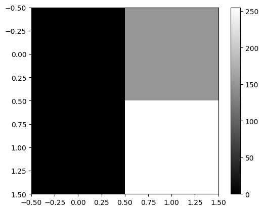
- plt.imshow(...) 에서 ...의 shape이 (??,??,3) 이러한 형태라면 칼라이미지를 출력
r = [[0,255],[0,255]] # (2,2)
g = [[255,0],[0,0]] # (2,2)
b = [[0,0],[255,0]] # (2,2)
plt.imshow(np.stack([r,g,b],axis=-1))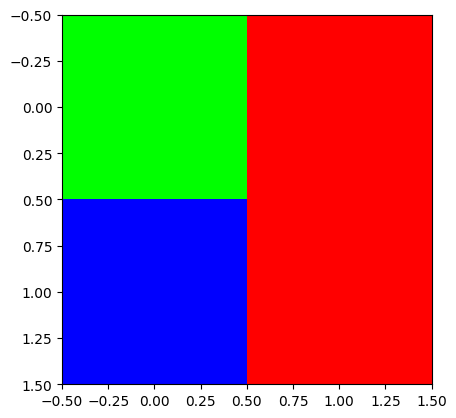
- plt.imshow(...) 에서 ...의 dtype이 int인지 float인지에 따라서 인식이 다름
r = [[0,1],[0,1]] # (2,2)
g = [[1,0],[0,0]] # (2,2)
b = [[0,0],[1,0]] # (2,2)
plt.imshow(np.stack([r,g,b],axis=-1))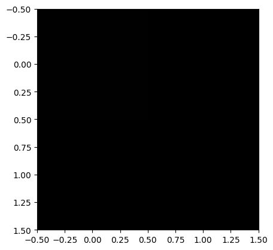
r = [[0,1],[0,1]] # (2,2)
g = [[1,0],[0,0]] # (2,2)
b = [[0,0],[1,0]] # (2,2)
plt.imshow(np.stack([r,g,b],axis=-1).astype(np.float64))
- 이건 마치 1을 255로 생각한 결과
### – 예비학습 끝
B. hani
import PIL!wget https://raw.githubusercontent.com/guebin/SC2022/main/hani.jpeg
hani = np.einsum('ijk->jik',np.array(PIL.Image.open('hani.jpeg'),dtype=np.int64)/255)
!rm hani.jpeg--2024-04-20 10:44:59-- https://raw.githubusercontent.com/guebin/SC2022/main/hani.jpeg
Resolving raw.githubusercontent.com (raw.githubusercontent.com)... 185.199.110.133, 185.199.111.133, 185.199.109.133, ...
Connecting to raw.githubusercontent.com (raw.githubusercontent.com)|185.199.110.133|:443... connected.
HTTP request sent, awaiting response... 200 OK
Length: 2445959 (2.3M) [image/jpeg]
Saving to: ‘hani.jpeg’
hani.jpeg 100%[===================>] 2.33M --.-KB/s in 0.04s
2024-04-20 10:44:59 (57.5 MB/s) - ‘hani.jpeg’ saved [2445959/2445959]
- note: 위 코드는 코랩 혹은 리눅스기반 환경에서 동작가능.
불러온 이미지는 아래와 같다.
hani,hani.shape(array([[[0.44705882, 0.48627451, 0.49411765],
[0.43137255, 0.46666667, 0.48627451],
[0.45882353, 0.50196078, 0.5254902 ],
...,
[0.6627451 , 0.6627451 , 0.70196078],
[0.63529412, 0.62745098, 0.67058824],
[0.64313725, 0.63529412, 0.67843137]],
[[0.45882353, 0.49803922, 0.50588235],
[0.44313725, 0.48235294, 0.49019608],
[0.4627451 , 0.50588235, 0.52156863],
...,
[0.63921569, 0.63921569, 0.67843137],
[0.64313725, 0.63529412, 0.67843137],
[0.63137255, 0.62352941, 0.66666667]],
[[0.45490196, 0.49411765, 0.50196078],
[0.4627451 , 0.49803922, 0.51764706],
[0.45882353, 0.50196078, 0.5254902 ],
...,
[0.64313725, 0.64313725, 0.68235294],
[0.65490196, 0.65490196, 0.69411765],
[0.64313725, 0.64313725, 0.68235294]],
...,
[[0.69411765, 0.69803922, 0.70588235],
[0.68627451, 0.69019608, 0.69803922],
[0.69411765, 0.69803922, 0.70588235],
...,
[0.60784314, 0.6 , 0.60392157],
[0.6 , 0.59215686, 0.59607843],
[0.59607843, 0.58823529, 0.59215686]],
[[0.70196078, 0.70588235, 0.71372549],
[0.72156863, 0.7254902 , 0.73333333],
[0.69019608, 0.69411765, 0.70196078],
...,
[0.61176471, 0.60392157, 0.60784314],
[0.60392157, 0.59607843, 0.6 ],
[0.61568627, 0.60784314, 0.61176471]],
[[0.7254902 , 0.72941176, 0.7372549 ],
[0.73333333, 0.7372549 , 0.74509804],
[0.70980392, 0.71372549, 0.72156863],
...,
[0.61176471, 0.60392157, 0.60784314],
[0.60392157, 0.59607843, 0.6 ],
[0.61960784, 0.61176471, 0.61568627]]]),
(4032, 3024, 3))- 이미지는 4032 \(\times\) 3024 개의 격자(픽셀)로 이루어져 있음
이미지를 보는 방법은 아래와 같다.
plt.imshow(hani) # 모든이미지, 하니매트릭스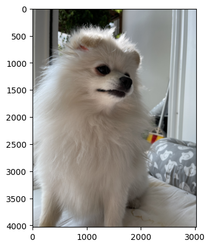
plt.imshow(hani[1000:1500, 1000:2000,:]) # 얼굴만 확대, 하니의 서브매트릭스 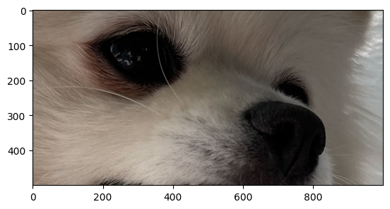
(1) 하니이미지를 나타내는 어레이를 변형하여 빨간색을 의미하는 칼라만 남겨서 “빨간하니”를 만들고 이미지를 출력하라.
(풀이1) – 제가 원래 하려고 했던 풀이
plt.imshow(np.stack([hani[:,:,0], hani[:,:,0]*0, hani[:,:,0]*0],axis=-1))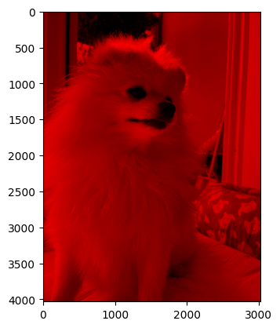
(풀이2) – GPT이용하여 얻은 힌트
hani[:,:,1].fill(0)
hani[:,:,2].fill(0)plt.imshow(hani)
(2) 하니의 모든 값에 루트를 취하여 “루트하니”를 만들고 “원본하니”와 “루트하니”를 좌우로 나란히 배치하여 출력하라.
(풀이)
root_hani = np.sqrt(hani) plt.imshow(np.concatenate([hani,root_hani],axis=1))
(3) 하니의 모든값에 아래와 같은 함수를 적용하라.
- \(f(x)=\begin{cases} \sqrt{x} & x>0.75 \\ x & x \leq 0.75 \end{cases}\)
함수의 결과로 얻어진 매트릭스를 “후광하니”라고 부르자. “원본하니”와 “후광하니”를 좌우로 나란히 배치하여 출력하라.
(풀이)
shining_hani = np.where(hani>0.75, np.sqrt(hani), hani)plt.imshow(np.concatenate([hani,shining_hani],axis=1))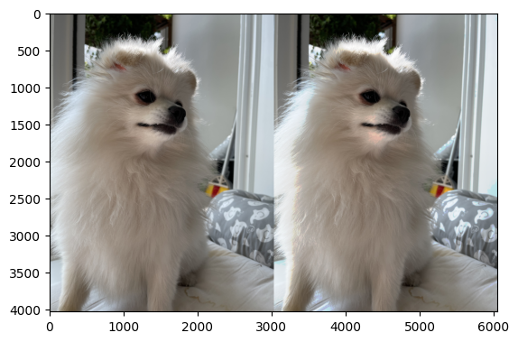
C. MNIST data
import urllib.request아래는 0~9가지의 숫자이미지가 저장된 이미지데이터를 불러오는 코드이다.
# URL 설정
url = 'https://github.com/guebin/PP2023/raw/main/posts/02_DataScience/mnist.npz'
# URL에서 파일 다운로드
urllib.request.urlretrieve(url, './mnist.npz')
# 데이터 로드
data = np.load('./mnist.npz')
xtrain, ytrain, xtest, ytest = data['x_train']/255, data['y_train'], data['x_test']/255, data['y_test']
# mnist.npz 삭제
!rm mnist.npzprint(f'이미지: xtrain -- {xtrain.shape}, xtest -- {xtest.shape}')
print(f'라벨: ytrain -- {ytrain.shape}, ytest -- {ytest.shape}')이미지: xtrain -- (60000, 28, 28), xtest -- (10000, 28, 28)
라벨: ytrain -- (60000,), ytest -- (10000,)아래는 데이터에 대한 설명이다.
- 전체의 이미지의 수는 70000개이며, 60000개의 이미지 \({\tt xtrain}\)에 10000개의 이미지는 \({\tt xtest}\)에 저장되어 있다.
- 이미지에 대한 라벨은 각각 \({\tt ytrain}\)과 \(\tt ytest\)에 저장되어 있다. 따라서 \(\tt ytrain\)에는 60000개의 이미지에 해당하는 라벨이, \(\tt ytest\)에는 10000개의 이미지에 해당하는 라벨이 기록되어 있다.
fig, ax = plt.subplots(2,5,figsize=(10,5))
ax[0][0].imshow(xtrain[0],cmap='gray'); ax[0][0].set_title(f'label={ytrain[0]}');
ax[0][1].imshow(xtrain[1],cmap='gray'); ax[0][1].set_title(f'label={ytrain[1]}');
ax[0][2].imshow(xtrain[2],cmap='gray'); ax[0][2].set_title(f'label={ytrain[2]}');
ax[0][3].imshow(xtrain[3],cmap='gray'); ax[0][3].set_title(f'label={ytrain[3]}');
ax[0][4].imshow(xtrain[4],cmap='gray'); ax[0][4].set_title(f'label={ytrain[4]}');
ax[1][0].imshow(xtrain[5],cmap='gray'); ax[1][0].set_title(f'label={ytrain[5]}');
ax[1][1].imshow(xtrain[6],cmap='gray'); ax[1][1].set_title(f'label={ytrain[6]}');
ax[1][2].imshow(xtrain[7],cmap='gray'); ax[1][2].set_title(f'label={ytrain[7]}');
ax[1][3].imshow(xtrain[8],cmap='gray'); ax[1][3].set_title(f'label={ytrain[8]}');
ax[1][4].imshow(xtrain[9],cmap='gray'); ax[1][4].set_title(f'label={ytrain[9]}');
fig.tight_layout()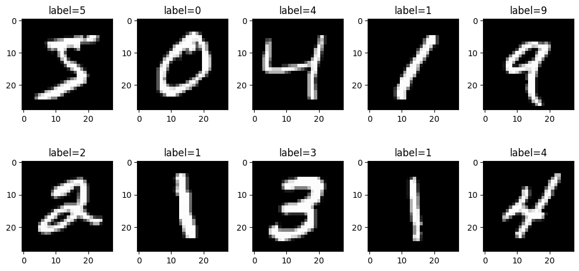
(1) 70000개의 이미지중 0~9에 해당하는 이미지는 각각 몇장씩 들어있는가?
(풀이)
y = np.concatenate([ytrain,ytest]).tolist(){s:y.count(s) for s in set(y)}{0: 6903,
1: 7877,
2: 6990,
3: 7141,
4: 6824,
5: 6313,
6: 6876,
7: 7293,
8: 6825,
9: 6958}(2) \({\tt xtrain}\)에서 손글씨 0을 의미하는 이미지만을 모아서 새로운 다차원 array \({\tt xtrain0}\)를 만들어라. 이 다차원 array 에서 처음과 마지막 이미지를 출력하라.
hint: \({\tt xtrain0}\) 의 shape은 (5923,28,28)이어야 한다.
(풀이)
xtrain0 = xtrain[ytrain == 0] # 숫자0이 라벨로 기록된 이미지들 plt.imshow(xtrain0[0],cmap="gray")
plt.imshow(xtrain0[-1],cmap="gray")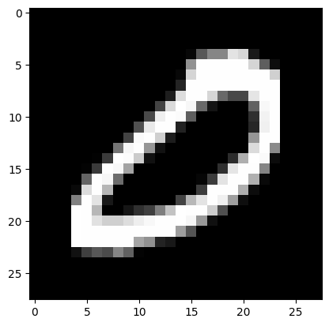
(3) \({\tt xtrain}\)에서 손글씨 0을 의미하는 이미지들의 평균을 계산하라. 즉 아래를 계산하라.
- \({\tt xtrain0mean} = \frac{1}{5923}\sum_{i=1}^{5923} {\tt xtrain0[i, :, :]}\)
계산결과를 출력하라.
(풀이)
첫번째 이미지 (왼쪽) 두번째 이미지 (가운데) 와 처음 두개의 이미지의 평균 (오른쪽) 은 아래와 같이 나타낼 수 있다.
fig,ax = plt.subplots(1,3)
ax[0].imshow(xtrain0[0],cmap="gray")
ax[1].imshow(xtrain0[1],cmap="gray")
#ax[2].imshow((xtrain0[0]+xtrain0[1])/2,cmap="gray")
ax[2].imshow(xtrain0[[0,1]].mean(axis=0),cmap="gray")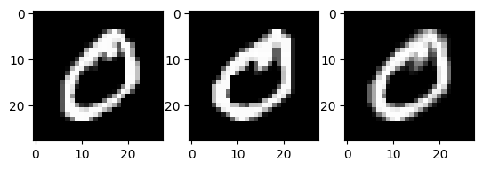
전체이미지의 평균은 아래와 같다.
plt.imshow(xtrain0.mean(axis=0),cmap='gray')
(4) \({\tt xtrain}\)에서 각 라벨에 대한 평균이미지를 계산하고 계산결과를 \({\tt imgmean}\)에 길이가 10인 list로 저장하라. 즉 \({\tt imgmean}\)은 아래와 같은 자료구조를 가지고 있어야 한다.
- \({\tt imgmean}=\big[{\tt imgmean[0]},\dots, {\tt imgmean[9]}\big]\)
- \({\tt imgmean[0]}, \dots, {\tt imgmean[9]}\) 는 각각 (28,28)의 shape을 가진 numpy array
- \({\tt imgmean[0]}, \dots, {\tt imgmean[9]}\) 는 각각 숫자 0,1, …, 9의 평균이미지를 의미
\({\tt imgmean[0]},\dots, {\tt imgmean[9]}\)를 시각화 하라.
(풀이)
imgmean = [xtrain[ytrain == i].mean(axis=0) for i in range(10)]fig, ax = plt.subplots(2,5,figsize=(10,5))
ax[0][0].imshow(imgmean[0],cmap='gray')
ax[0][1].imshow(imgmean[1],cmap='gray')
ax[0][2].imshow(imgmean[2],cmap='gray')
ax[0][3].imshow(imgmean[3],cmap='gray')
ax[0][4].imshow(imgmean[4],cmap='gray')
ax[1][0].imshow(imgmean[5],cmap='gray')
ax[1][1].imshow(imgmean[6],cmap='gray')
ax[1][2].imshow(imgmean[7],cmap='gray')
ax[1][3].imshow(imgmean[8],cmap='gray')
ax[1][4].imshow(imgmean[9],cmap='gray')
fig.tight_layout()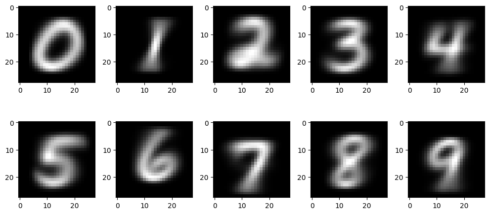
(5) \({\tt xtrain}\)의 두번째 이미지와 \({\tt imgmean[0]}\)의 차이를 제곱한 값의 평균을 구하라. 즉 아래를 계산하라.
- \(mean\Big(({\tt xtrain[1]}-{\tt imgmean[0]})^2\Big)\)
(풀이)
fig, ax = plt.subplots(1,3)
ax[0].imshow(xtrain[1],cmap="gray")
ax[1].imshow(imgmean[0],cmap="gray")
ax[2].imshow((xtrain[1]-imgmean[0])**2,cmap="gray")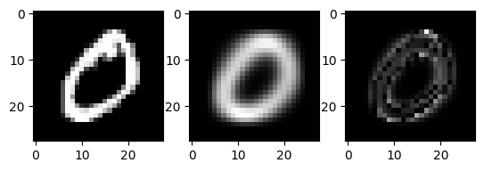
((xtrain[1]-imgmean[0])**2).mean()0.03537037336385432(6) 모든 \(j=0,1,\dots,9\) 에 대하여 아래를 계산하라.
- \(mean\Big(({\tt xtrain[1]}-{\tt imgmean[j]})^2\Big)\)
계산값이 가장 작게 나오는 \(j\)는 얼마인가? 위의 계산결과를 토대로 \({\tt xtrain}\)의 두번째 이미지는 어떠한 숫자를 의미한다고 “분류”하는 것이 타당한가?
(풀이)
{j:((xtrain[1]-imgmean[j])**2).mean() for j in range(10)}{0: 0.03537037336385432,
1: 0.11495388576147866,
2: 0.09465585697275321,
3: 0.09057822103883667,
4: 0.10401706236099066,
5: 0.07100192423576142,
6: 0.09006332783104219,
7: 0.09943866938812378,
8: 0.09098879425485074,
9: 0.09820108036961576}((xtrain[1]-imgmean[j])**2).mean() 를 가장 작게만드는 j는 0 이다.
fig, ax = plt.subplots(10,3,figsize=(7.5,30))
for j in range(10):
ax[j][0].imshow(xtrain[1],cmap="gray");
ax[j][0].set_title("xtrain[1]")
ax[j][1].imshow(imgmean[j],cmap="gray")
ax[j][1].set_title(f"imgmean[{j}]")
ax[j][2].imshow((xtrain[1]-imgmean[j])**2,cmap="gray")
ax[j][2].set_title(f'loss = {((xtrain[1]-imgmean[j])**2).mean():.4f}')
fig.tight_layout()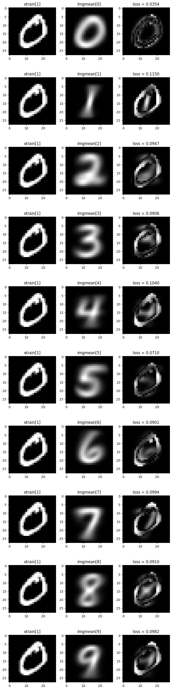
xtrain[1] 이미지는 0으로 분류하는게 타당해보인다.
(7) 아래와 같은 numpy array 를 생성하라.
\[{\tt loss}= \begin{bmatrix} {\tt loss[0,0]} & \dots & {\tt loss[0,9]} \\ {\tt loss[1,0]} & \dots & {\tt loss[1,9]} \\ \dots & \dots & \dots \\ {\tt loss[59999,0]}& \dots &{\tt loss[59999,9]} \\ \end{bmatrix}\]
단, \({\tt loss[i,j]} = mean\Big(({\tt xtrain[i]}-{\tt imgmean[j]})^2\Big)\)
위에서 생성한 \({\tt loss}\)를 이용해 (6)와 같은 방식으로 \({\tt xtrain}\)의 모든 이미지에 대한 분류를 수행하라.
hint: \({\tt loss}\)에서 “최소값을 가지는 원소의 인덱스를 출력”하는 함수를 각 행별로 적용하면 된다.
(풀이)
loss = np.array([[np.mean((xtrain[i] - imgmean[j])**2) for j in range(10)] for i in range(60000)])
lossarray([[0.08436263, 0.08777293, 0.08016276, ..., 0.07754168, 0.06951451,
0.07958829],
[0.03537037, 0.11495389, 0.09465586, ..., 0.09943867, 0.09098879,
0.09820108],
[0.10793399, 0.09755518, 0.08827192, ..., 0.08612435, 0.09451805,
0.0769925 ],
...,
[0.09429922, 0.08422548, 0.09809041, ..., 0.07034968, 0.06364432,
0.06299717],
[0.06883611, 0.07933228, 0.0698403 , ..., 0.07655916, 0.08341635,
0.07272038],
[0.08297837, 0.0728127 , 0.06969071, ..., 0.07119765, 0.05851329,
0.06540166]])loss.argmin(axis=-1) # 꽤 그럴듯하게 예측하고 있음array([5, 0, 4, ..., 5, 6, 8])(8) (7)에서 수행한 분류결과와 실제 라벨 \({\tt ytrain}\)을 비교하라. 얼마나 많은 결과가 일치하는지 비율을 계산하라.
(풀이)
sum(ytrain == loss.argmin(axis=-1)) / 600000.8079833333333334(ytrain == loss.argmin(axis=-1)).mean()0.8079833333333334(9) \({\tt xtrain}\)에서 학습한 평균이미지 \({\tt imgmean}\)를 바탕으로 \({\tt xtest}\)의 이미지를 분류하라. 분류결과를 \({\tt ytest}\)와 비교하라. 얼마나 많은 결과가 일치하는지 비율을 계산하라.
(풀이)
loss = np.array([[np.mean((xtest[i] - imgmean[j])**2) for j in range(10)] for i in range(10000)])
(loss.argmin(axis=-1) == ytest).mean()0.8203(10) (9)의 과정에서 잘못분류된 이미지 10개를 선택하여 시각화 하라.
- 실제 라벨과 잘못된 라벨을 구분하여 시각화 할 것
sum(loss.argmin(axis=-1) != ytest) # 잘못분류된것은 1797장의 이미지1797xtest[loss.argmin(axis=-1) != ytest] # 잘못분류된 이미지들
ytest[loss.argmin(axis=-1) != ytest] # 잘못분류된 이미지들에 대한 실제 라벨
loss.argmin(axis=-1)[loss.argmin(axis=-1) != ytest] # 잘못분류된 이미지들에 대한 예측된 라벨array([2, 2, 7, ..., 8, 8, 4])fig, ax = plt.subplots(2,5,figsize=(10,5))
for i in range(2):
for j in range(5):
ax[i][j].imshow(xtest[loss.argmin(axis=-1) != ytest][i+j],cmap='gray')
ax[i][j].set_title(f"{ytest[loss.argmin(axis=-1) != ytest][i+j]} / {loss.argmin(axis=-1)[loss.argmin(axis=-1) != ytest][i+j]}")
fig.tight_layout()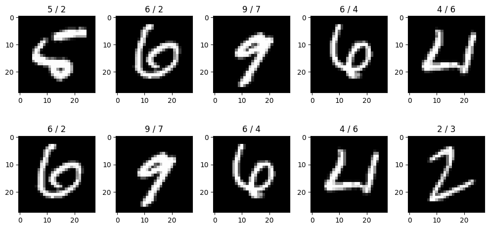